|
I, Robot
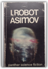
Paperback. No date, edition or printing stated. States "Reprinted 1968, 1969 (twice). Cover halfway separated from spine, but no marks inside.from
Fieldbook: Boy Scouts of America
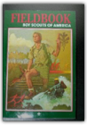
Boy Scouts of America, John J. Breitling
Full of great photos and illustrations and of course useful and practical tips!
Nordic Knitting Traditions: Knit 25 Scandinavian, Icelandic and Fair Isle Accessories
Traditional Scandinavian and Icelandic designs are given new life in the projects found in Nordic Knitting Traditions. 25 projects feature original floral, star, feather and geometric motifs, all knit in fresh and modern colors. With a diverse collection of hats, tams, mittens, gloves, socks, knee-highs and legwarmers, you'll find plenty of jaw-dropping, colorful accessories to knit for yourself and the ones you love. Inside: Thoughtful construction and full-color charts make these designs easy to knit.Variations for knitting mittens and gloves in two ways and lengthening socks into knee-highs, as well as fully charted alternative colorways, allow you to achieve customized looks.Complete the Look" instructions guide you to patterns that match, making it easy to create coordinating accessories.Tips and tricks for sizing, construction and stress-free knitting help you knit items that will become family heirlooms.Nordic Knitting Traditions celebrates the roots of stranded knitting with inspiring designs and elegant colorways. Start knitting your own piece of history today. " Patterns In The Sand: Computers, Complexity, And Everyday Life
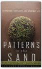
Terry Bossomaier, David Green
Until recently, science has made progress by breaking large systems down into smaller and simpler parts, studying and explaining how these parts operate, and putting them back together again. Although this ”reductionist” approach works amazingly well when we study the atom or the function of a single gene, it hits a brick wall when it comes to vastly complex systems like the brain, or the weather, or the ecosphere. Such systems are just too complicated to yield their secrets to the reductionist approach.The new science of complexity, one of the twentieth centuries greatest contributions to our comprehension of nature, is concerned with treating vastly complicated systems, like the biosphere or the Internet, as holistic systems. Patterns in the Sand discusses this new scientific paradigm that treats life as a natural computation, and shows how this approach translates into ways of dealing with complexity in real life. It shows, for example, how key ideas, such as chaos, criticality, and emergent phenomena, helps us to understand how ants build their nests, how the brain works, why we enact simple routines like getting up in the morning and going to work, and why accidents happen.Using such everyday phenomena as illustrations, Bossomaier and Green take us from the most basic function of the simple Turing computer through the vast interrelationships of the earth’s biota, right up to the search for life on other planets, while providing a new understanding of the complicated, complex, world around us.
The Secret Life of Lobsters: How Fishermen and Scientists Are Unraveling the Mysteries of Our Favorite Crustacean
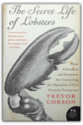
Trevor Corson
In this intimate portrait of an island lobstering community and aneccentric band of renegade biologists, journalist Trevor Corson escorts the reader onto the slippery decks of fishing boats, through danger-filled scuba dives, and deep into the churning currents of the Gulf of Maine to learn about the secret undersea lives of lobsters. This P.S. edition features an extra 16 pages of insights into the book, including author interviews, recommended reading, and more.
The Third Chimpanzee: The Evolution and Future of the Human Animal
We human beings share 98 percent of our genes with chimpanzees. Yet humans are the dominant species on the planet — having founded civilizations and religions, developed intricate and diverse forms of communication, learned science, built cities, and created breathtaking works of art — while chimps remain animals concerned primarily with the basic necessities of survival. What is it about that two percent difference in DNA that has created such a divergence between evolutionary cousins? In this fascinating, provocative, passionate, funny, endlessly entertaining work, renowned Pulitzer Prize–winning author and scientist Jared Diamond explores how the extraordinary human animal, in a remarkably short time, developed the capacity to rule the world . . . and the means to irrevocably destroy it. A People Betrayed: November 1918: A German Revolution
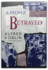
Alfred Doblin
Princessa na Kirieshkah: Evlampija Romanova. Sledstvie vedet diletant #15
Embracing Defeat: Japan in the Wake of World War II
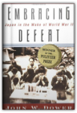
John W. Dower
Winner of the Pulitzer Prize, the 1999 National Book Award for Nonfiction, finalist for the Lionel Gelber Prize and the Kiriyama Pacific Rim Book Prize, Embracing Defeat is John W. Dower's brilliant examination of Japan in the immediate, shattering aftermath of World War II.Drawing on a vast range of Japanese sources and illustrated with dozens of astonishing documentary photographs, Embracing Defeat is the fullest and most important history of the more than six years of American occupation, which affected every level of Japanese society, often in ways neither side could anticipate. Dower, whom Stephen E. Ambrose has called "America's foremost historian of the Second World War in the Pacific," gives us the rich and turbulent interplay between West and East, the victor and the vanquished, in a way never before attempted, from top-level manipulations concerning the fate of Emperor Hirohito to the hopes and fears of men and women in every walk of life. Already regarded as the benchmark in its field, Embracing Defeat is a work of colossal scholarship and history of the very first order. John W. Dower is the Elting E. Morison Professor of History at the Massachusetts Institute of Technology. He is a winner of the National Book Critics Circle Award for War Without Mercy.
Penguins, of All People
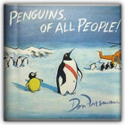
Don Freeman
Five penguin ambassadors from the South Pole visit the United Nations to tell the people of the world how to live in peace.
Junk Genius: Stylish Ways to Reinvent Everyday Objects
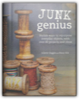
Juliette Goggin, Stacy Sirk
In Junk Genius, you will find highly rewarding and money-saving repurposing projects, and discover why making your own is a trend well worth exploring. Juliette Goggin and Stacy Sirk have created over 40 projects using items you can easily find or might already have. Discover creative ways to use glass and old crates as well as no end of uses for paper, including crafting with wallpaper, stamps and old photos. Add something different to your household with a range of light fittings made from colanders and even jelly moulds! Transform old keys into a range of items, from jewellery to door handles. Finally, try making unwanted jumpers into cosy pillow covers. Whether you are a beginner or experienced crafter, you will learn to hunt out and see the potential in a whole range of items, and be inspired to transform your treasure trove of useable raw materials into stunning new accessories for your home. Taps into the popular upcycling market, appealing to those just discovering a love of crafting, as well as those rediscovering long-forgotten crafting skills.
King Leopold's Ghost: A Story of Greed, Terror and Heroism
Voices: An Inspector Erlendur Novel
The Christmas rush is at its peak in a grand Reykjavík hotel when Inspector Erlendur is called in to investigate a murder. The hotel Santa has been stabbed to death, and Erlendur and his fellow detectives find no shortage of suspects between the hotel staff and the international travelers staying for the holidays. As Christmas Day approaches, Erlendur must deal with his difficult daughter, pursue a possible romantic interest, and untangle a long-buried web of malice and greed to find the murderer. Voices is a brutal, soulful noir from the chilly shores of Iceland. The Ghost Map: The Story of London's Most Terrifying Epidemic and How It Changed Science, Cities, and the Modern World
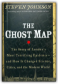
Steven Johnson
From the dynamic thinker routinely compared to Malcolm Gladwell, E. O. Wilson, and James Gleick, The Ghost Map is a riveting page-turner with a real-life historical hero that brilliantly illuminates the intertwined histories of the spread of viruses, rise of cities, and the nature of scientific inquiry. These are topics that have long obsessed Steven Johnson, and The Ghost Map is a true triumph of the kind of multidisciplinary thinking for which he's become famous-a book that, like the work of Jared Diamond, presents both vivid history and a powerful and provocative explanation of what it means for the world we live in.The Ghost Map takes place in the summer of 1854. A devastating cholera outbreak seizes London just as it is emerging as a modern city: more than 2 million people packed into a ten-mile circumference, a hub of travel and commerce, teeming with people from all over the world, continually pushing the limits of infrastructure that's outdated as soon as it's updated. Dr. John Snow—whose ideas about contagion had been dismissed by the scientific community—is spurred to intense action when the people in his neighborhood begin dying. With enthralling suspense, Johnson chronicles Snow's day-by-day efforts, as he risks his own life to prove how the epidemic is being spread. When he creates the map that traces the pattern of outbreak back to its source, Dr. Snow didn't just solve the most pressing medical riddle of his time. He ultimately established a precedent for the way modern city-dwellers, city planners, physicians, and public officials think about the spread of disease and the development of the modern urban environment. The Ghost Map is an endlessly compelling and utterly gripping account of that London summer of 1854, from the microbial level to the macrourban-theory level—including, most important, the human level. Watch a QuickTime trailer for this book. An Unfinished Season: A Novel
Under the Banner of Heaven: A Story of Violent Faith
At the core of Krakauer’s book are brothers Ron and Dan Lafferty, who insist they received a commandment from God to kill a blameless woman and her baby girl. Beginning with a meticulously researched account of this appalling double murder, Krakauer constructs a multi-layered, bone-chilling narrative of messianic delusion, polygamy, savage violence, and unyielding faith. Along the way he uncovers a shadowy offshoot of America’s fastest growing religion, and raises provocative questions about the nature of religious belief. The Call of the Wild
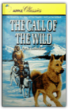
Jack London
One of the most popular and exciting adventure stories is now being reissued with vibrant, realistic paintings by a highly acclaimed artist and an introduction by award-winning author, Gary Paulsen. First published in 1903, this striking reissue is as relevant today as it was when it was first published. Black-and-white illustrations.
Pyramid
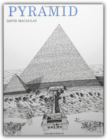
David Macaulay
Through concise text and richly detailed black and white illustrations we come to know the philosophy of life and death in ancient Egypt.
Castle
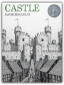
David Macaulay
The word itself conjures up mystery, romance, intrigue, and grandeur. What could be more perfect for an author/illustrator who has continually stripped away the mystique of architectural structures that have long fascinated modern man? With typical zest and wry sense of humor punctuating his drawings, David Macaulay traces the step-by-step planning and construction of both castle and town.
City: A Story of Roman Planning and Construction
Unbuilding
Mill
Dr. Seuss Goes to War: The World War II Editorial Cartoons of Theodor Seuss Geisel
Animal Farm Publisher: Signet Classics; 50th Anniversary edition
Muscovy and the Mongols: Cross-Cultural Influences on the Steppe Frontier, 1304-1589
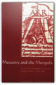
Donald Ostrowski
In this innovative and challenging study, Donald Ostrowski adds fresh and important insights to a pivotally important yet poorly understood subject—Mongol influence on Muscovy. Ostrowski considers here the outside origins and influences, as well as the indigenous origins and development, and shows that during the early period of Muscovy the dominant outside influences came through both Byzantium and the Qipchaq Khanate with its capital at Sarai. In considering these outside influences, Ostrowski has set out to study Muscovy as an integral and important part of world history.
The Botany of Desire: A Plant's-Eye View of the World
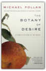
Michael Pollan
The book that helped make Michael Pollan, the New York Times bestselling author of Cooked and The Omnivore’s Dilemma, one of the most trusted food experts in AmericaEvery schoolchild learns about the mutually beneficial dance of honeybees and flowers: The bee collects nectar and pollen to make honey and, in the process, spreads the flowers’ genes far and wide. In The Botany of Desire, Michael Pollan ingeniously demonstrates how people and domesticated plants have formed a similarly reciprocal relationship. He masterfully links four fundamental human desires—sweetness, beauty, intoxication, and control—with the plants that satisfy them: the apple, the tulip, marijuana, and the potato. In telling the stories of four familiar species, Pollan illustrates how the plants have evolved to satisfy humankind’s most basic yearnings. And just as we’ve benefited from these plants, we have also done well by them. So who is really domesticating whom? The Omnivore's Dilemma: A Natural History of Four Meals
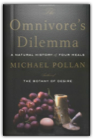
Michael Pollan
Make this your next book club selection and everyone saves.Get 15% off when you order 5 or more of this title for your book club. Simply enter the coupon code POLLANOMNIVORE at checkout. This offer does not apply to eBook purchases. This offer applies to only one downloadable audio per purchase. What should we have for dinner?" To one degree or another this simple question assails any creature faced with a wide choice of things to eat. Anthropologists call it the omnivore's dilemma. Choosing from among the countless potential foods nature offers, humans have had to learn what is safe, and what isn't—which mushrooms should be avoided, for example, and which berries we can enjoy. Today, as America confronts what can only be described as a national eating disorder, the omnivore's dilemma has returned with an atavistic vengeance. The cornucopia of the modern American supermarket and fast-food outlet has thrown us back on a bewildering landscape where we once again have to worry about which of those tasty-looking morsels might kill us. At the same time we're realizing that our food choices also have profound implications for the health of our environment. The Omnivore's Dilemma is bestselling author Michael Pollan's brilliant and eye-opening exploration of these little-known but vitally important dimensions of eating in America. Pollan has divided The Omnivore's Dilemma into three parts, one for each of the food chains that sustain us: industrialized food, alternative or "organic" food, and food people obtain by dint of their own hunting, gathering, or gardening. Pollan follows each food chain literally from the ground up to the table, emphasizing our dynamic coevolutionary relationship with the species we depend on. He concludes each section by sitting down to a meal—at McDonald's, at home with his family sharing a dinner from Whole Foods, and in a revolutionary "beyond organic" farm in Virginia. For each meal he traces the provenance of everything consumed, revealing the hidden components we unwittingly ingest and explaining how our taste for particular foods reflects our environmental and biological inheritance. We are indeed what we eat-and what we eat remakes the world. A society of voracious and increasingly confused omnivores, we are just beginning to recognize the profound consequences of the simplest everyday food choices, both for ourselves and for the natural world. The Omnivore's Dilemma is a long-overdue book and one that will become known for bringing a completely fresh perspective to a question as ordinary and yet momentous as What shall we have for dinner? A few facts and figures from The Omnivore's Dilemma: Of the 38 ingredients it takes to make a McNugget, there are at least 13 that are derived from corn. 45 different menu items at Mcdonald’s are made from corn. One in every three American children eats fast food every day. One in every five American meals today is eaten in the car. The food industry burns nearly a fifth of all the petroleum consumed in the United States—more than we burn with our cars and more than any other industry consumes. It takes ten calories of fossil fuel energy to deliver one calorie of food energy to an American plate. A single strawberry contains about five calories. To get that strawberry from a field in California to a plate on the east coast requires 435 calories of energy. Industrial fertilizer and industrial pesticides both owe their existence to the conversion of the World War II munitions industry to civilian uses—nerve gases became pesticides, and ammonium nitrate explosives became nitrogen fertilizers. ... MY BRAIN IS OPEN: The Mathematical Journeys of Paul Erdos
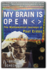
Bruce Schechter
Paul Erdõs, one of the greatest mathematicians of the twentieth century, and certainly the most eccentric, was internationally recognized as a prodigy by age seventeen. Hungarian-born Erdõs believed that the meaning of life was to prove and conjecture. His work in the United States and all over the world has earned him the titles of the century's leading number theorist and the most prolific mathematician who ever lived. Erdõs's important work has proved pivotal to the development of computer science, and his unique personality makes him an unforgettable character in the world of mathematics. Incapable of the smallest of household tasks and having no permanent home or job, he was sustained by the generosity of colleagues and by his own belief in the beauty of numbers.Witty and filled with the sort of mathematical puzzles that intrigued Erdõs and continue to fascinate mathematicians today, My Brain Is Open is the story of this strange genius and a journey in his footsteps through the world of mathematics, where universal truths await discovery like hidden treasures and where brilliant proofs are poetry. Fermat's Enigma: The Epic Quest to Solve the World's Greatest Mathematical Problem
"I have discovered a truly marvelous demonstration of this proposition which this margin is too narrow to contain." With these words, the seventeenth-century French mathematician Pierre de Fermat threw down the gauntlet to future generations. What came to be known as Fermat's Last Theorem looked simple; proving it, however, became the Holy Grail of mathematics, baffling its finest minds for more than 350 years. In Fermat's Enigma—based on the author's award-winning documentary film, which aired on PBS's "Nova"—Simon Singh tells the astonishingly entertaining story of the pursuit of that grail, and the lives that were devoted to, sacrificed for, and saved by it. Here is a mesmerizing tale of heartbreak and mastery that will forever change your feelings about mathematics. Cryptonomicon
In 1942, Lawrence Pritchard Waterhouse—mathematical genius and young Captain in the U.S. Navy—is assigned to detachment 2702. It is an outfit so secret that only a handful of people know it exists, and some of those people have names like Churchill and Roosevelt. The mission of Waterhouse and Detachment 2702—commanded by Marine Raider Bobby Shaftoe-is to keep the Nazis ignorant of the fact that Allied Intelligence has cracked the enemy's fabled Enigma code. It is a game, a cryptographic chess match between Waterhouse and his German counterpart, translated into action by the gung-ho Shaftoe and his forces. Fast-forward to the present, where Waterhouse's crypto-hacker grandson, Randy, is attempting to create a "data haven" in Southeast Asia—a place where encrypted data can be stored and exchanged free of repression and scrutiny. As governments and multinationals attack the endeavor, Randy joins forces with Shaftoe's tough-as-nails granddaughter, Amy, to secretly salvage a sunken Nazi submarine that holds the key to keeping the dream of a data haven afloat. But soon their scheme brings to light a massive conspiracy with its roots in Detachment 2702 linked to an unbreakable Nazi code called Arethusa. And it will represent the path to unimaginable riches and a future of personal and digital liberty...or to universal totalitarianism reborn. A breathtaking tour de force, and Neal Stephenson's most accomplished and affecting work to date, Cryptonomicon is profound and prophetic, hypnotic and hyper-driven, as it leaps forward and back between World War II and the World Wide Web, hinting all the while at a dark day-after-tomorrow. It is a work of great art, thought and creative daring; the product of a truly iconoclastic imagination working with white-hot intensity. The Elements of Style
Beautiful Swimmers: Watermen, Crabs and the Chesapeake Bay
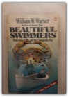
William W. Warner
"IN THE TRADIITON OF RACHEL CARSON'S THE EDGE OF THE SEA AND ANNIE DILLARD'S PILGRIM AT TINKER CREEK, WILLIAM W. WARNER'S BEAUTIFULSWIMMERS IS A BOOK THAT DELIGHTS AND INFORMS GENERAL READERS AND NATURALIST ALIKE; A COMPLETE BUT HUMANE NATURAL HISTORY OF THE PUGNACIOUS, SUCCULENT ATLANTIC BLUE CRAB WHICH, IN BOTH ITS HARD AND SOFT SHELL FORMS, GRACES MILLIONS OF AMERICAN TABLES; A STUDY OF THE CHESAPEAKE BAY—ITS HISTORY, ITS WINDS AND TIDES, ITS GRADATIONS OF DEPTH, TEMPERATURE AND SALINITY—WHICH PROVIDES MORE CRABS FOR HUMAN CONSUMPTION THAN ANY OTHER BODY OF WATER IN THE WORLD; AND A COLORFUL ACCOUNT OF THE WATERMEN WHO MAKE THEIR LIVING PURSUING THE BLUE CRAB." " CONTENTS.... THE BAY AUTUMN, DEAL ISLAND WINTER FOLLOW THE WATER BEAUTIFUL SWIMMER SPRING LESTER LEE AND THE CHICKEN NECKERS TO MARKET SUMMER AND SCRAPING THE ISLANDS, LOOKING AHEAD OUT MAIN BAY CRISFIELD AN AFTERWORD
|

My Library
Collection Total:
1320 Items
1320 Items
Last Updated:
Apr 14, 2013
Apr 14, 2013
 Made with Delicious Library
Made with Delicious Library